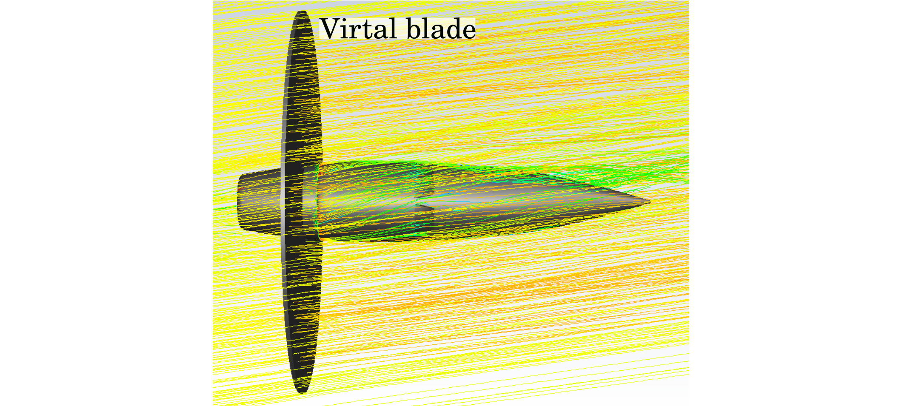

Projet de fin d'étude
Ce stage s'est déroulé à Safran Helicopter Engine (Bordes) dans le service des avants-projets, dans le cadre du projet EcoPulse. L'objectif était d'implémenter une nouvelle méthode de prendre en compte l'hélice des moteurs électriques dans les simuations RANS sans les mailler. L'hélice est considérée comme un disque de terme source. Pour calculer ces termes sources, l'hélice est discrétisée en amont du calcul RANS comme une pile de profil. Pour chacun de ces profils, la portance, la traînée et le moment sont calculés pour de nombraux nombre de Reynolds et nombre de Mach afin d'établir une abaque. Cette méthode a été intégré avec succés à un cas de calcul complexe 3D pour valider le refroidissement des moteurs électriques d'EcoPulse.